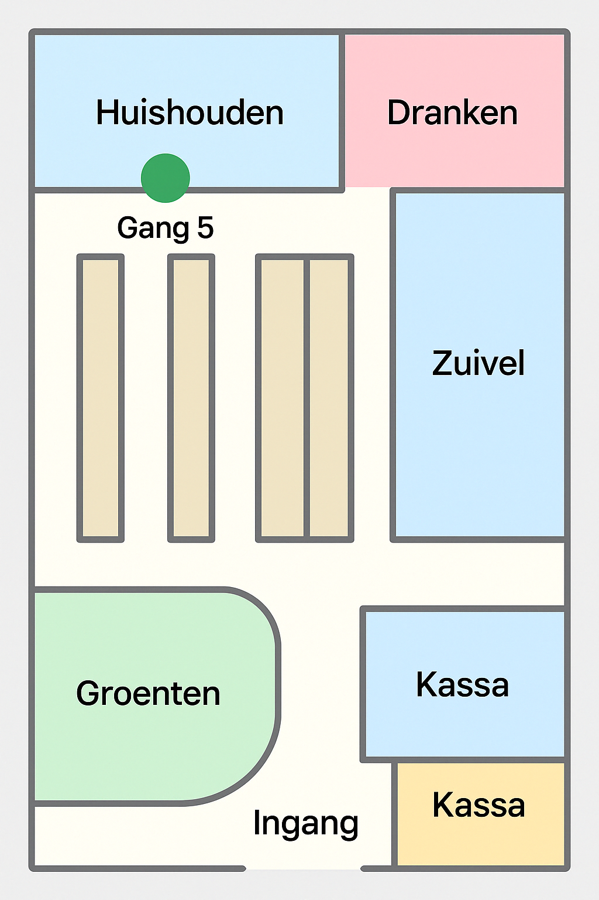

<map name="winkelmap">
  <area shape="rect" coords="50,50,150,120" href="#" alt="Huishouden" title="Huishouden" data-id="gang5">
  <area shape="rect" coords="160,50,260,120" href="#" alt="Dranken" title="Dranken" data-id="gang4">
  <area shape="rect" coords="270,50,370,120" href="#" alt="Zuivel" title="Zuivel" data-id="gang2">
  <area shape="rect" coords="380,50,480,120" href="#" alt="Groente & Fruit" title="Groente & Fruit" data-id="gang1">
</map>
